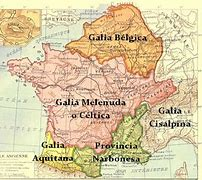
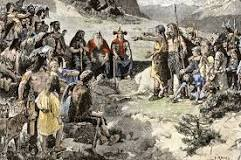
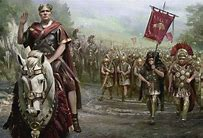
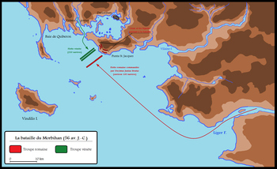
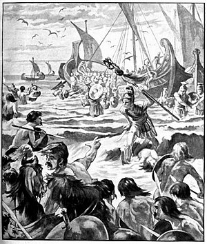
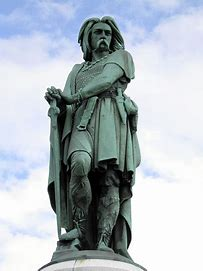
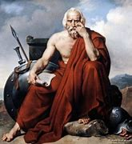

La Guerra de las Galias
Tras su año consular César y con el apoyo de Pompeyo y Craso, César pasó a gobernar la Galia Trasalpina (sur de Francia), La Galia Cisalpina (norte de Francia y parte de
Alemania) e Lliria (la costa de Dalmacia). César todavía estaba muy endeudado y al estilo de los proconsules romanos no iba a
gobernar pacíficamente. El dinero se conseguía mediante extorsiones o aventuras militares y los helvecios de dieron rápidamente
la primera oportunidad de iniciar una campaña militar y derrotarlos.
Ver más

El Triunvirato
La alianza informal entre César, Craso y Pompeyo se conoce como el primer triunvirato. Los tres hombres tenían suficiente dinero
e influencia política como para controlar el manejo de la política, y los soldados de Pompeyo estaban en la ciudad e intimidaban
a los opositores, miembros de las familias patricias y del Senado.

Los Helvecios
Los helvecios, boios y tulingios cruzaron a la Galia Comata escapando a la presión de otros pueblos germánicas que los atacaban
en sus tierras. Contaban con unos 100000 soldados y superaban a las legiones romanas varias veces en número.
Romanos y helvecios se encontraron en las cercanías de Bibracte y fueron arrasados por las legiones.

Los Belgas
Las numerosas tribus belgas temían que César marchara contra ellos y formaron una gran alianza. En el invierno del 58-57 a.C. César escuchó rumores
sobre la intención de los belgas de atacar a los romanos. En la batalla del río Sabis los romanos fueron tomados por
sorpresa y sólo la sangre fría de su general y el valor y disciplina de sus legiones convirtió una derrota en un
aplastante triunfo.

Los Venetos
César atacó a los vénetos para vengar a oficiales romanos tomados prisioneros para forzar un intercambio de rehenes. Los vénetos eran
muy buenos marineros y tenían mejores barcos, pero la perseverancia y la ingeniería de los romanos permitió que vencieran a la flota gala en la batalla de
Morbihan.

Los Britanos
César hizo dos campañas contra el sur de la isla de Britania (Gran Bretaña) en los años 55 y 54 a.C. César alegaba que los britanos habían estado apoyando a los belgas en
su campaña contra Roma. Los soldados galos que huían de la batalla se refugiaban a los asentamientos galos en Britania -los
belgas había cruzado el canal a Britania y habían establecido colonias costeras.

Los Avernos
Vercingétoris unió a la mayoría de las tribus galas para enfrentar a César y expulsarlo. Fue vencido en la batalla de Alessia
en 52 a.C., apresado, encarcelado y ejecutado en 46 a.C. tras celebrarse el triunfo de César. Sus hijos fueron criados como romanos.

El Balance
En las guerras de la Galias entre 58 a 49 a.C., según Plutarco, César tomó 800 ciudades, sometió 300 tribus, tomó un millón de exclavos y 3 millones de galos murieron. Plinio habla de más de un millón de muertos y otro tantos prisioneros. Patérculo dice que
murieron 400000 galos y muchos más fueron prisioneros.